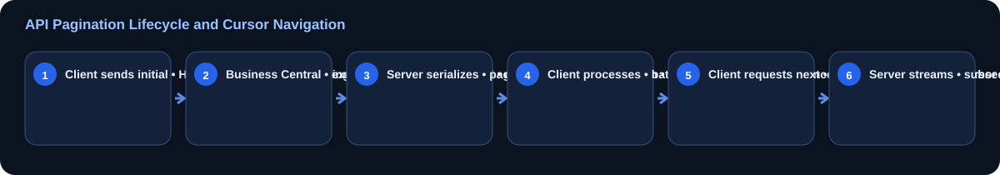

How the API flow works

The Problem: Large Datasets and API Timeouts
In modern enterprise architectures, integrations are expected to sync high volumes of records between Microsoft Dynamics 365 Business Central and external systems like CRMs, data warehouses, and e-commerce platforms. However, querying thousands of records in a single synchronous call is one of the most common causes of system performance degradation, memory exhaustion, and HTTP 504 Gateway Timeouts.
When an integration requests a large volume of data without limits, the Business Central middle-tier service (NST) must fetch all matching records from the SQL database, load them into memory, serialize them into a JSON payload, and stream them over the network. This process locks database resources, blocks standard transaction execution threads, and consumes excessive active memory on the container hosting the environment. If the execution time exceeds standard server thresholds, Business Central abruptly terminates the connection, causing integration failures.
To solve this resource bottleneck, developers must design and implement robust strategies around business central api pagination and general API performance using AL. Correctly managing how data is partitioned and retrieved ensures that your APIs remain responsive, performant, and safe for high-throughput transactional databases.
Understanding OData Pagination in Business Central
Dynamics 365 Business Central utilizes OData v4 for web services, which natively supports server-driven and client-driven pagination. Understanding the mechanical differences between these two pagination styles is critical to writing performant integration endpoints.
Client-Driven Pagination ($top and $skip)
In client-driven pagination, the consumer controls the size and offset of the dataset using the $top and $skip query parameters. For example, to fetch the second page of 50 records, the client requests:
GET https://api.businesscentral.dynamics.com/v2.0/tenant/environment/api/dynexal/logistics/v2.0/customItems?$top=50&$skip=50While this approach seems clean, it has a major performance drawback inside the database engine. On SQL Server, the $skip operator translates into an OFFSET FETCH statement. As the skip value grows larger (e.g., skipping 50,000 records), the database engine must still scan and discard all preceding records before returning the targeted subset. The operational complexity is O(N), leading to severe performance degradation on deep paging actions.
Server-Driven Pagination ($skiptoken)
Server-driven pagination relies on a cursor-based approach managed by the Business Central server. When a request matches a dataset that exceeds the server's page size limit (by default, 20,000 records in Business Central SaaS) or when the client requests a specific page size using the odata.maxpagesize header, Business Central appends a cursor token inside the payload named @odata.nextLink.
The @odata.nextLink contains a system-generated $skiptoken parameter. This token is an encoded identifier representing the position of the last retrieved record. When the client makes a call to the nextLink URI, Business Central resumes scanning from that specific index rather than scanning from the beginning. This reduces operational complexity to O(1) or O(log N), keeping queries extremely fast regardless of the depth of the page.
Architecture of Efficient API Pagination

To design an enterprise-ready pagination strategy, you must understand how data traverses the different layers of the Dynamics 365 stack. By combining proper database indexes, appropriate AL properties, and cursor management, you achieve optimal throughput.
The system execution relies on passing a stateful cursor through successive HTTP loops. The transaction isolation level must also be carefully managed on the AL page properties to ensure database locks are not held during paginated loops, which would otherwise degrade interactive user performance on client sessions.
Designing a Custom API Page in AL with Pagination Support
When developing a custom API in AL, you must choose properties that optimize read performance and prepare the underlying system query generator for efficient execution plans. The most important properties for read-heavy APIs are DataAccessIntent and correct indexing on the source table.
Setting DataAccessIntent = ReadOnly instructs Business Central to route the SQL queries directly to a secondary read-only database replica (if available in the SaaS environment), completely bypassing the primary transactional node. This significantly reduces locks on your active tables.
The following example demonstrates how to build a highly optimized API page for custom inventory records:
page 50120 "CustomItemApi"
{
PageType = API;
Caption = 'customItemApi';
APIPublisher = 'dynexal';
APIGroup = 'logistics';
APIVersion = 'v2.0';
EntityName = 'customItem';
EntitySetName = 'customItems';
SourceTable = Item;
DelayedInsert = true;
DataAccessIntent = ReadOnly;
ODataKeyFields = SystemId;
layout
{
area(Content)
{
repeater(GroupName)
{
field(id; Rec.SystemId)
{
Caption = 'Id';
}
field(number; Rec."No.")
{
Caption = 'No.';
}
field(description; Rec.Description)
{
Caption = 'Description';
}
field(baseUnitOfMeasure; Rec."Base Unit of Measure")
{
Caption = 'Base Unit Of Measure';
}
field(inventory; Rec.Inventory)
{
Caption = 'Inventory';
}
}
}
}
}In this AL declaration, we map ODataKeyFields to SystemId. This ensures that the primary system index is leveraged for OData queries, guaranteeing fast operations. We also avoid writing complex calculations inside trigger procedures like OnAfterGetRecord, which would destroy performance during paginated table scans.
Implementing Client-Side Consumption of Paginated AL APIs
When consuming standard or custom Business Central endpoints from another AL extension (e.g., when building a data-hub extension inside Business Central that pulls records from another environment), your code must explicitly look for and follow the @odata.nextLink property.
The following implementation demonstrates a robust pattern for recursively calling an external Business Central API using AL API pagination patterns, processing records iteratively in small memory batches:
codeunit 50125 "ApiFetchManager"
{
procedure FetchAllPaginatedItems()
var
Client: HttpClient;
Response: HttpResponseMessage;
RequestUrl: Text;
Payload: Text;
NextLink: Text;
begin
// Define the initial endpoint with a strict, reasonable page size limit
RequestUrl := 'https://api.businesscentral.dynamics.com/v2.0/tenant/production/api/dynexal/logistics/v2.0/customItems?$top=100';
while RequestUrl <> '' do begin
if Client.Get(RequestUrl, Response) then begin
if Response.IsSuccessStatusCode() then begin
Response.Content().AsText(Payload);
// Process the current page payload
ProcessBatchPayload(Payload);
// Extract the next page pointer if it exists
RequestUrl := GetNextPageUrl(Payload);
end else
Error('API Request failed with status code %1', Response.HttpStatusCode());
end else
Error('Unable to connect to the targeted API gateway.');
end;
end;
local procedure ProcessBatchPayload(Payload: Text)
var
JObject: JsonObject;
JToken: JsonToken;
JArray: JsonArray;
I: Integer;
RecordToken: JsonToken;
begin
if not JObject.ReadFrom(Payload) then
exit;
if JObject.Get('value', JToken) and JToken.IsArray() then begin
JArray := JToken.AsArray();
for I := 0 to JArray.Count() - 1 do begin
JArray.Get(I, RecordToken);
// Execute record insertion/updates here locally
end;
end;
end;
local procedure GetNextPageUrl(Payload: Text): Text
var
JObject: JsonObject;
JToken: JsonToken;
begin
if not JObject.ReadFrom(Payload) then
exit('');
if JObject.Get('@odata.nextLink', JToken) then
exit(JToken.AsValue().AsText());
exit(''); // No more pages left to fetch
end;
}Using this loop-bound architecture keeps the memory footprint on the caller side low. Memory is garbage-collected after every cycle, preventing the service tier from allocating enormous heaps to contain hundreds of thousands of JSON nodes at once.
Performance Tuning for Paginated APIs in AL
Improving your API performance in Business Central goes beyond adding a loop. You must optimize the database layer to cooperate with pagination. The following strategies must be enforced by lead AL architects:
- Avoid FlowFields in API Pages: FlowFields (like
InventoryorBalance (LCY)) require sub-queries or joins on historical ledger tables. Evaluating FlowFields on large lists during pagination scans triggers repetitive aggregate database calls. If a calculation is strictly required, expose it on a separate specialized page, or use indexed physical tables updated asynchronously. - Set explicit $select queries: Teach external integration systems to only request fields that are strictly necessary using
$select=number,description. This minimizes payload size, reducing JSON serialization CPU processing times on the Middle Tier. - Establish SQL Indexes for Custom Keys: If your integration filters records using parameters other than the Primary Key (such as filtering custom item cards by a status code), you must define a key in your table declaration. For example:
key(ApiKey1; Status, "Last Modified Date-Time"). Without explicit indexes, pagination requires SQL table scans, making pages slow. - Leverage Change Tracking via OData Delta Links: Instead of repeatedly paging through thousands of static records to look for updates, implement Change Tracking. This mechanism generates delta tokens, allowing external processes to query only modified or added records since the previous execution checkpoint.
Common Errors and How to Troubleshoot Them
When executing high-frequency API paginations, you are highly likely to encounter specific errors on production systems. Knowing their causes helps you troubleshoot systems swiftly.
1. HTTP 429 Too Many Requests
This is a rate-limiting mechanism implemented by the Business Central SaaS environment to maintain system-wide performance and fair usage. If an integration spawns multiple asynchronous threads, all paginating rapidly, the server blocks incoming traffic from that tenant endpoint. Solve this by implementing back-off algorithms and retry-after logic in the client consuming the API.
2. OData Pagination Token Invalid / Expired
The $skiptoken is stateful and generated dynamically. If the client takes too long between fetching one page and requesting the next (typically over the standard IIS/OData timeout boundaries), the cursor token expires. When requested, the server returns an HTTP 400 Bad Request. Ensure your integration client requests the next page immediately after parsing the current batch, without waiting for long-running downstream processes to complete.
3. SQL Server Lock Timeout (HTTP 500/504)
If your API page doesn't utilize DataAccessIntent = ReadOnly, the pagination queries can block tables while interactive ERP users write journal lines or post orders. The database engine blocks the pagination query to prevent deadlock. If the blocked query exceeds SQL timeout values, a Gateway Timeout or internal server error is thrown. Ensuring read-only routing eliminates this block.
Frequently Asked Questions
What is the maximum page size supported by Business Central APIs?
By default, Business Central SaaS limits page responses to 20,000 records. While you can request smaller pages using the odata.maxpagesize header, requesting a page size larger than 20,000 will be overridden by the server-side safety limit of 20,000.
Should I use $skip or $skiptoken for paging in custom solutions?
You should always prefer $skiptoken (server-driven cursor pagination) over $skip (offset pagination). While $skip is easier to test manually on small datasets, its query complexity is linear and degrades significantly when accessing high numbers of records, causing database bottlenecks.
Does DataAccessIntent = ReadOnly always prevent database locks?
Yes, DataAccessIntent = ReadOnly attempts to target the secondary read-only database replica. This eliminates database locks on the primary transactional database, though developers must keep in mind that replica sync delays mean data might be slightly delayed (by fractions of a second).
How can I track the performance of paginated API queries in production?
You should configure telemetry logging inside the Dynamics 365 Business Central Administration Center to stream performance telemetry directly to Azure Application Insights. This logs OData query metrics, execution times, and lock details, allowing you to identify slow-running API tables and long-running queries.
Related Dynexal Learning
Explore more practical Business Central and AL development tutorials on the Dynexal Tutorials hub.